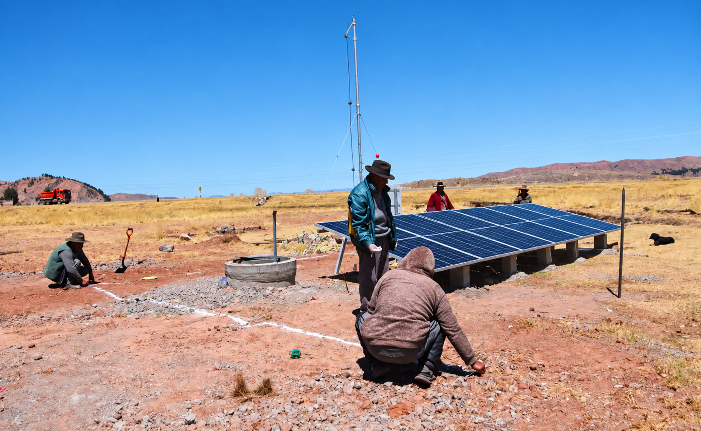

01
Fuentes de contaminación
Letrinas cercanas, pozos sin protección adecuada, infiltraciones y contacto con animales pueden contaminar los pozos domésticos estudiados [1].
QUÉ HACEMOS
AquaNexo Hogar desarrolla el Módulo Nexo: un dispositivo compacto de pequeña escala dirigido a las familias del barrio Chacarilla, ciudad de Puno, que utilizan agua de pozos domésticos contaminados [1].
Conoce el problema que abordamos
PROBLEMA REAL · BARRIO CHACARILLA
En el barrio Chacarilla de la ciudad de Puno se estudiaron ocho pozos utilizados por viviendas. Los ocho presentaron contaminación microbiológica; la cercanía de letrinas, el sellado deficiente y otras condiciones sanitarias incrementan el riesgo para las familias que consumen esa agua [1].
01
Letrinas cercanas, pozos sin protección adecuada, infiltraciones y contacto con animales pueden contaminar los pozos domésticos estudiados [1].
02
La presencia de coliformes y Escherichia coli indica contaminación fecal y una posible exposición a microorganismos causantes de enfermedades transmitidas por el agua [1].
03
Las viviendas del caso requieren una alternativa de pequeña escala que responda a la calidad real de sus pozos y pueda ser operada por las familias usuarias.
NUESTRA FORMA DE TRABAJO
Evaluamos cada pozo doméstico de Chacarilla, su protección, cercanía a letrinas, forma de almacenamiento y demanda de agua. Analizamos coliformes totales, coliformes fecales y Escherichia coli.
Configuramos las etapas de filtración y desinfección según la calidad del agua, la carga microbiológica y el consumo de una vivienda o del conjunto de viviendas participantes de Chacarilla.
Instalamos el Módulo Nexo cerca del punto de abastecimiento o almacenamiento doméstico, con capacidad ajustada al caudal requerido por los hogares usuarios del barrio.
Verificamos la calidad microbiológica del agua tratada, capacitamos a las familias de Chacarilla y dejamos una rutina sencilla de operación, limpieza y mantenimiento.
NUESTRA PROPUESTA INNOVADORA
En lugar de proyectar una planta centralizada, adaptamos tecnologías de tratamiento existentes a una arquitectura compacta y configurable para las condiciones observadas en los pozos domésticos de Chacarilla.
Atiende una vivienda o un grupo de viviendas del barrio Chacarilla, sin sobredimensionar la solución.
Las barreras de filtración y desinfección se seleccionan de acuerdo con el diagnóstico del agua y pueden ajustarse al caso.
Prioriza un uso comprensible, mantenimiento sencillo y acompañamiento para que la familia pueda operarlo con seguridad.
Después de validarse en Chacarilla, el concepto podría adaptarse a otras viviendas con fuentes y riesgos semejantes.
Alcance actual: reducción de contaminación microbiológica en los pozos domésticos que abastecen a las viviendas del barrio Chacarilla, ciudad de Puno.
CASO REAL EN PUNO
Este estudio sustenta el problema real y delimita nuestro público objetivo: las familias de Chacarilla abastecidas por pozos domésticos contaminados [1].
CASO DE ESTUDIO · BARRIO CHACARILLA, CIUDAD DE PUNO
Durante dos meses se analizaron ocho pozos domésticos mediante cuatro muestreos separados por intervalos de 25 días. Los valores más elevados se encontraron en los pozos ubicados a menor distancia de las letrinas [1].
NMP significa Número Más Probable. Es una estimación estadística de la cantidad de microorganismos presentes en una muestra, calculada a partir del número de tubos que presentan crecimiento bacteriano. NMP/100 mL expresa el número estimado de microorganismos en 100 mililitros de agua.
Criterio peruano para análisis mediante NMP: < 1,8 NMP/100 mL (D.S. N.° 031-2010-SA) [2].
FUENTES PRINCIPALES